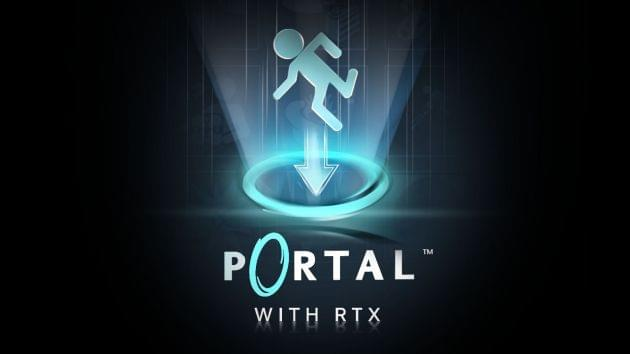
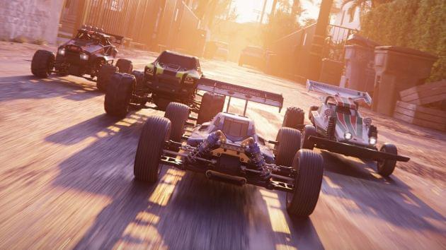
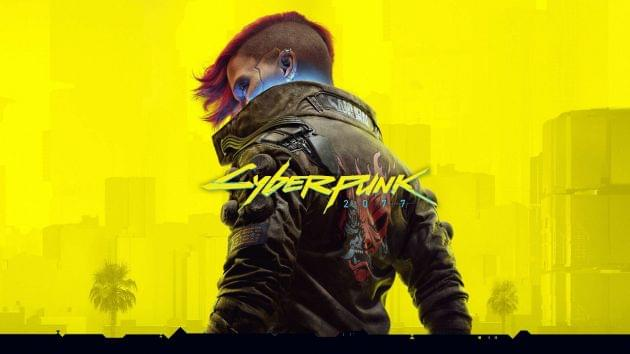
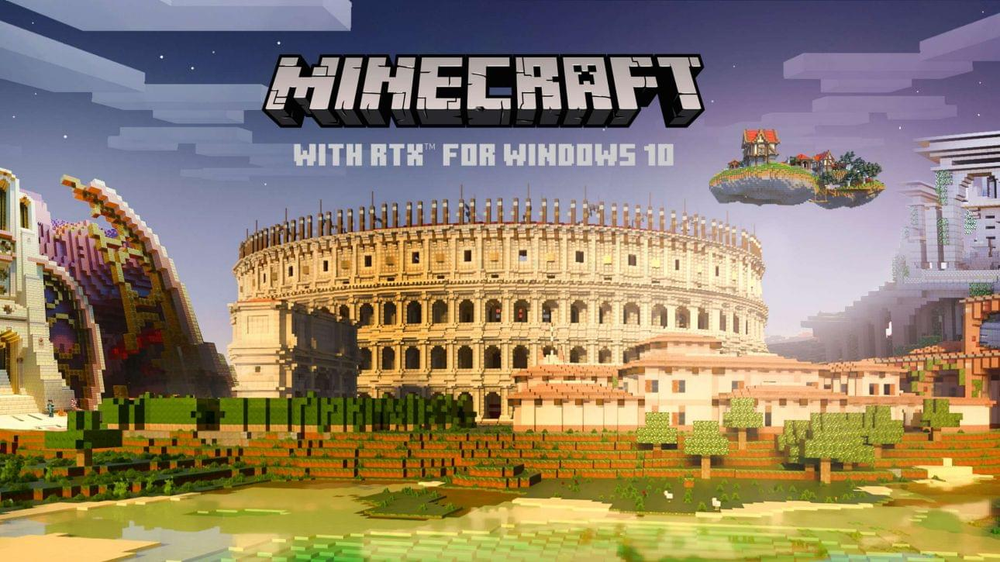

Популярные игры с поддержкой RTX

Portal с RTX
Заново погрузитесь в признанную критиками и удостоенную наград игру Portal™ , обновленную с помощью трассировки лучей, революционной производительности NVIDIA DLSS 3 с ускорением на базе ИИ и оптимального отклика с NVIDIA Reflex.
Технологии: трассировка лучей, DLSS 3, DLSS 2 и Reflex.
Технологии: трассировка лучей, DLSS 3, DLSS 2 и Reflex.

NVIDIA Racer RTX
NVIDIA Racer RTX — это забавный, высокоточный симулятор, который позволяет пользователям перемещаться на автомобилях с дистанционным управлением в различных захватывающих, физически точных средах. Созданная на платформе NVIDIA Omniverse и работающая на базе графических процессоров GeForce RTX 40, игра NVIDIA Racer RTX демонстрирует новейшие технологии NVIDIA.

Cyberpunk 2077
Окунитесь в атмосферу насыщенной жизни футуристичного Найт-Сити благодаря возможностям GeForce RTX.
Технологии: отражения с трассировкой лучей, фоновое затенение, тени, рассеянное освещение, глобальное освещение и DLSS 2.
Технологии: отражения с трассировкой лучей, фоновое затенение, тени, рассеянное освещение, глобальное освещение и DLSS 2.
Ведьмак 3: Дикая Охота. Полное издание
Исследуйте огромный открытый мир Дикой охоты в роли наемного убийцы монстров Геральта из Ривии и выследите дитя пророчества, чтобы спасти или уничтожить этот мир. Получите незабываемые впечатления от с видеокартой GeForce RTX 40.
Технологии: отражения с трассировкой лучей, тени, фоновое затенение, RTXGI, DLSS 3, DLSS 2 и Reflex.
Технологии: отражения с трассировкой лучей, тени, фоновое затенение, RTXGI, DLSS 3, DLSS 2 и Reflex.
MARVEL Человек-Паук: Майлз Моралес
Испытайте мощь видеокарты GeForce RTX 40 в игре MARVEL Человек-Паук: Майлз Моралес , дополненной набором технологий RTX, и помогите новому Человеку-Пауку спасти весь Нью-Йорк Marvel от жестокой силы, угрожающей уничтожить его.
Технологии: отражения с трассировкой лучей, тени, DLSS 3, DLSS 2, DLAA и Reflex.
Технологии: отражения с трассировкой лучей, тени, DLSS 3, DLSS 2, DLAA и Reflex.
.jpeg)
Fortnite
Прокатитесь на Battle Bus, cражайтесь до конца или создайте мир своей мечты c GeForce RTX.
Технологии: отражения с трассировкой лучей, фоновое затенение, тени и DLSS.
Технологии: отражения с трассировкой лучей, фоновое затенение, тени и DLSS.

Minecraft с RTX для Windows 10
Стройте и исследуйте удивительные миры в преображенной версии Minecraft с технологией RTX.
Технологии: отражения с трассировкой лучей, тени, глобальное освещение и DLSS.
Технологии: отражения с трассировкой лучей, тени, глобальное освещение и DLSS.
Microsoft Flight Simulator
Оцените максимальную реалистичность геймплея в Microsoft Flight Simulator с высокопроизводительными графическими процессорами GeForce RTX и NVIDIA DLSS на базе ИИ, которые обеспечивают возможность максимального увеличения настроек и разрешения, а также достижения визуальной точности и впечатляющей реалистичности полетов. Выше только небо!Broadcast
Технологии: DLSS 3, DLSS 2 и Reflex.
Технологии: DLSS 3, DLSS 2 и Reflex.